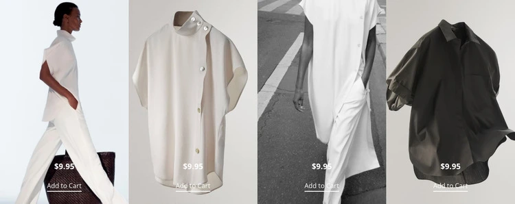
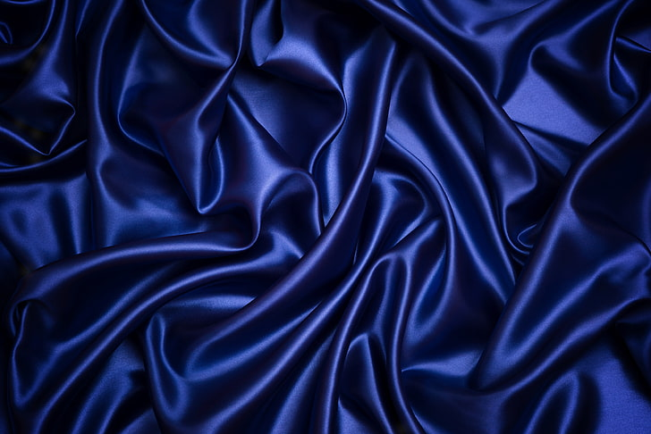
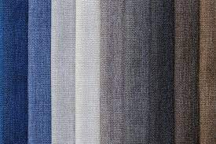
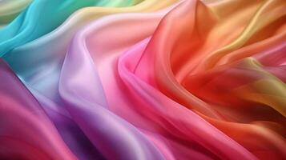
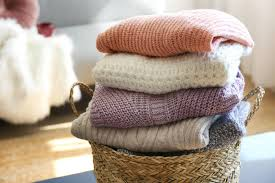
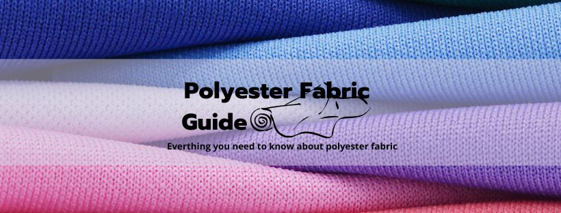
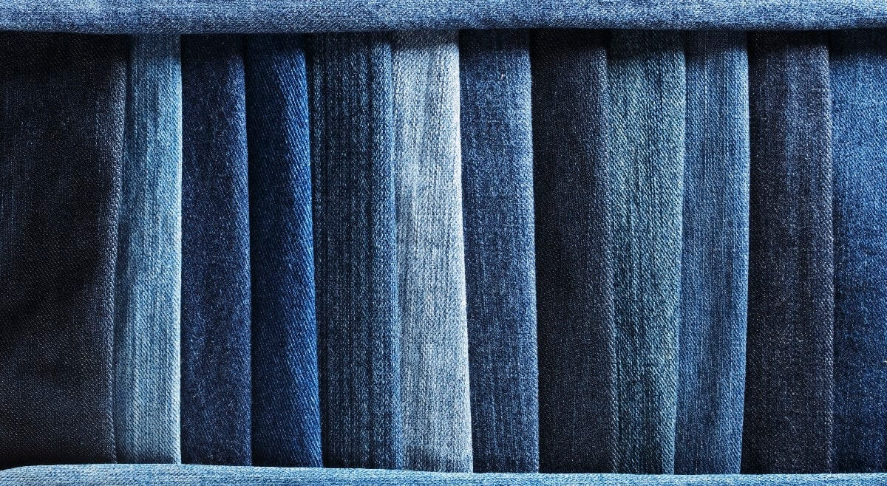
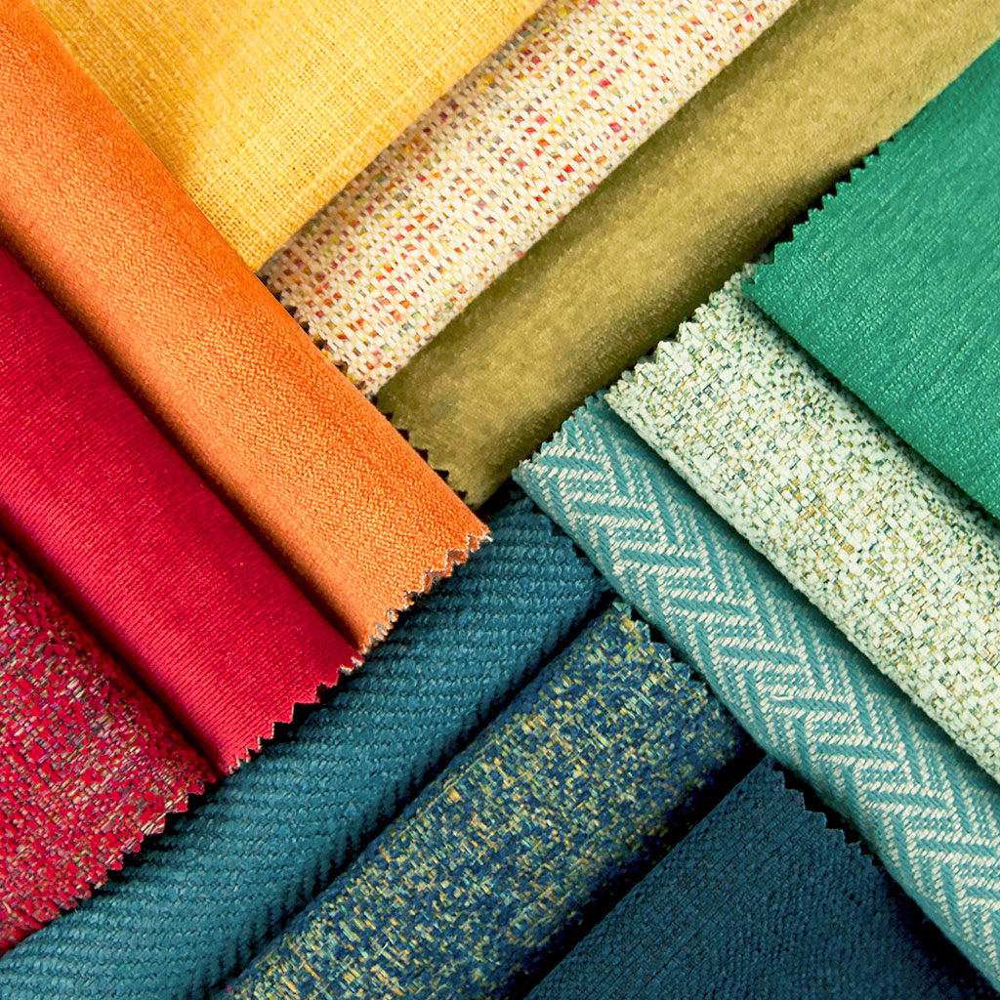

Home

welcome to our texttile market website

New Collections

5 Types of texttile market
- Plant Base
- Animal base
- Cellulosic
- Semi Synthetic
- Synthetic
1. Plant Base
Over the years, using fabrics made from plants have become a trend. More manufacturers prefer using plant-based 5 meter textile fabrics as they are environmentally friendly.
2. Animal base
5 meter textiles made from this fibre usually come from the fur or skin of animals. These fibres are woven or knitted to create jackets, blazers, coats, and other clothing.The common sources of animal fibres are sheep, goats, rabbits, and camels as their fibres are very soft. On the other hand, fibres coming from horses, pigs, and cows are less soft.
3. Cellulosic
Cellulosic fibres are extracted from the cellulose found in woody plants. This material is mixed with caustic soda and carbon disulfide then processed through a spinneret to create the fibres.Viscose is the most common type of cellulose.
4. Semi Synthetic
Semi-synthetic fibres are created from natural materials and are reformed by chemical processes. Some of the semi-synthetic fibres are Acetate, Triacetate, and Promix.
5. Synthetic
Fabrics that are formed through a chemical process is called synthetic fabrics. This fibre is chemically built from gas, alcohol, water, and petroleum.Synthetic fibres are cheaper and can be a replacement for natural fibres. With this, the demand for synthetic fabrics has dramatically increased.
Products

silk - A smooth, lustrous fabric made from the fibers of the silkworm cocoon, often used in formal wear and luxury textiles.
Cotton - A soft, breathable fabric made from the fibers of the cotton plant, often used in casual clothing and bedding.
Chiffon - This type of fabric is sheer , which means that it is light and semi-transparent with a simple weave.
Wool - A warm, durable fabric made from the fleece of sheep or other animals, often used in winter clothing and blankets.
Plyster - A synthetic fabric that is durable, wrinkle-resistant, and easy to care for, often used in casual clothing and home decor.
Denim - A sturdy cotton fabric with a characteristic blue color and diagonal weave, often used in jeans and casual wear.
Rayon - A soft, breathable fabric made from cellulose fibers, often used in summer clothing and home decor.
About Us
Services and Locations
- Cloth Frbric
- Silk
- cotten
- chiffon
- wool
- Pollyster
- Denim
- Rayon
- Our Famouse Markets
- Mahaveer Market
- J.P. Market
- Manish Market
- Maha Laxmi Market
- Bomaby Market
- New Bombay Market
- Ashirvad Market
- Locations
- Surat
- Bombay
- Puna
- Hedrabad
- Tamilnadu
- Thane
- Ahemedabad